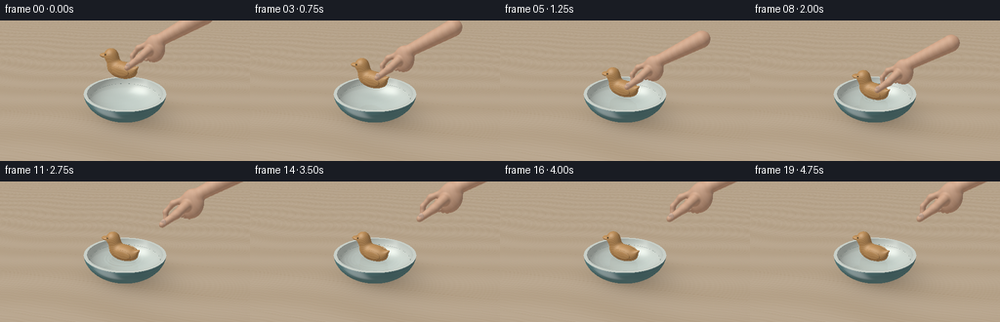
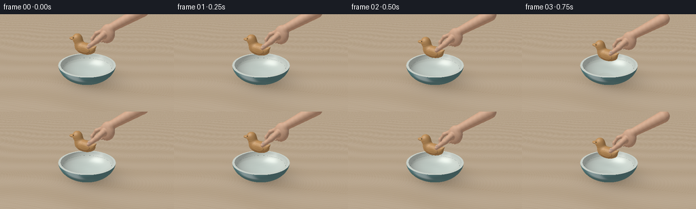
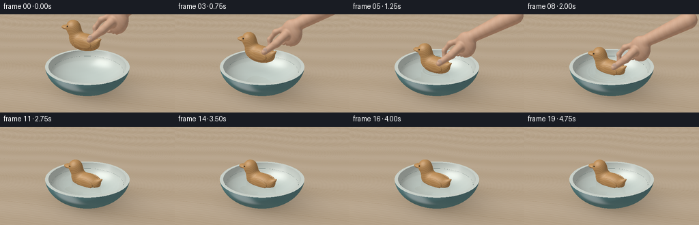
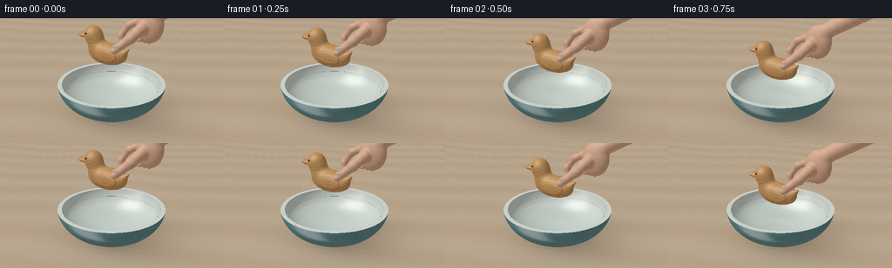

CODING AGENTS AS PIXEL WORLD MODELS
traex/GPT-6.1-Sol · mechanics_0010
点击播放 · 原生 RGB 像素
逐轮保存的候选
回放视频、检查图与代码变化。
每份候选均可单独播放。实际图片检查记录在下方工具轨迹中。
候选 01播放与检查图
点击播放 · 原生 RGB 像素


展开代码变化
--- 上一保存版本
+++ 本次保存版本
@@ -0,0 +1,411 @@
+"""Deterministic, numpy-only scene renderer for a gently placed wooden toy.
+All geometry, lighting, shading, and animation are constructed from the prompt.
+"""
+from pathlib import Path
+import json
+import numpy as np
+from PIL import Image
+import artifact_io
+
+ROOT=Path(__file__).resolve().parent
+SPEC=json.loads((ROOT/'task_spec.json').read_text())
+S=2
+W,H=SPEC['width']*S,SPEC['height']*S
+DT=np.float32
+INF=1.e6
+LIGHT=np.array([-3.5,-4.5,7.0],DT)
+LIGHT/=np.linalg.norm(LIGHT)
+CAM=np.array([3.3,-6.0,4.1],DT)
+TARGET=np.array([0,0,.95],DT)
+FWD=TARGET-CAM; FWD/=np.linalg.norm(FWD)
+RIGHT=np.cross(FWD,[0,0,1]); RIGHT/=np.linalg.norm(RIGHT)
+UP=np.cross(RIGHT,FWD)
+xx,yy=np.meshgrid(np.arange(W)+.5,np.arange(H)+.5)
+focal=H/(2*np.tan(np.deg2rad(36)/2))
+D=(FWD[None,None,:]+((xx-W/2)/focal)[...,None]*RIGHT+((H/2-yy)/focal)[...,None]*UP)
+D=(D/np.linalg.norm(D,axis=-1,keepdims=True)).reshape(-1,3).astype(DT)
+O=np.broadcast_to(CAM,D.shape).copy()
+
+
+def normalize(a):
+ return a/np.maximum(np.linalg.norm(a,axis=-1,keepdims=True),1e-8)
+
+def smooth(a,b,k):
+ h=np.clip(.5+.5*(b-a)/k,0,1)
+ return b*(1-h)+a*h-k*h*(1-h)
+
+def ellipsoid(p,c,r):
+ q=(p-np.asarray(c,dtype=DT))
+ k0=np.sqrt(np.sum((q/r)**2,axis=-1))
+ k1=np.sqrt(np.sum((q/(np.array(r)**2))**2,axis=-1))
+ return k0*(k0-1)/np.maximum(k1,1.e-8)
+
+def capsule(p,a,b,r0,r1=None):
+ a=np.array(a,DT); b=np.array(b,DT)
+ v=b-a
+ t=np.clip(((p-a)*v).sum(axis=-1)/np.dot(v,v),0,1)
+ r=r0 if r1 is None else r0+(r1-r0)*t
+ return np.linalg.norm(p-a-t[...,None]*v,axis=-1)-r
+
+
+def toy_sdf(p):
+ d=ellipsoid(p,(0,0,.255),(.55,.29,.285))
+ d=smooth(d,ellipsoid(p,(-.34,0,.46),(.23,.215,.30)),.105)
+ d=smooth(d,ellipsoid(p,(-.43,0,.68),(.245,.235,.245)),.085)
+ d=smooth(d,ellipsoid(p,(-.675,-.005,.653),(.218,.155,.073)),.025)
+ # Swept-up tail and slightly raised, carved side wings.
+ d=smooth(d,capsule(p,(.39,0,.27),(.61,0,.46),.16,.025),.065)
+ d=smooth(d,ellipsoid(p,(.08,-.25,.285),(.345,.052,.163)),.016)
+ d=smooth(d,ellipsoid(p,(.08,.25,.285),(.345,.052,.163)),.016)
+ return d
+
+# A palm, wrist, and jointed fingers, arranged as an anatomically plausible pinch.
+HAND_PARTS=[
+ ('e',(.87,.35,1.68),(.34,.205,.43)),
+ ('c',(.99,.41,1.94),(2.18,.66,2.7),.19,.25),
+ ('c',(.75,.17,1.65),(.59,-.14,1.45),.15,.118),
+ ('c',(.59,-.14,1.45),(.24,-.29,1.14),.118,.092),
+ ('c',(.72,.34,1.84),(.32,.33,1.64),.095,.085),
+ ('c',(.32,.33,1.64),(.12,.31,1.36),.085,.075),
+ ('c',(.12,.31,1.36),(.15,.28,1.12),.075,.083),
+ ('c',(.87,.53,1.81),(.51,.59,1.54),.098,.085),
+ ('c',(.51,.59,1.54),(.43,.45,1.30),.085,.075),
+ ('c',(.43,.45,1.30),(.62,.34,1.31),.075,.070),
+ ('c',(.99,.58,1.73),(.72,.67,1.45),.086,.077),
+ ('c',(.72,.67,1.45),(.70,.47,1.26),.077,.069),
+ ('c',(1.06,.57,1.59),(.91,.64,1.31),.073,.064),
+ ('c',(.91,.64,1.31),(.83,.46,1.25),.064,.061),
+]
+
+def hand_sdf(p):
+ d=np.full(p.shape[:-1],100.,DT)
+ for item in HAND_PARTS:
+ di=ellipsoid(p,item[1],item[2]) if item[0]=='e' else capsule(p,*item[1:])
+ d=smooth(d,di,.065)
+ return d
+
+
+def rotz(a):
+ c,s=np.cos(a),np.sin(a)
+ return np.array([[c,-s,0],[s,c,0],[0,0,1]],DT)
+
+def roty(a):
+ c,s=np.cos(a),np.sin(a)
+ return np.array([[c,0,s],[0,1,0],[-s,0,c]],DT)
+
+def easing(t):
+ t=np.clip(t,0,1); return t*t*(3-2*t)
+
+
+def setup(t):
+ # 1.7 seconds to settle, then release and withdraw without any splash.
+ desc=easing(t/1.65)
+ contact=max(0,t-1.65)
+ bob=.022*np.sin(contact*5.8)*np.exp(-contact*.8) if contact>0 else 0
+ T=np.array([-.10+.06*desc,-.03,.675+.78*(1-desc)+bob],DT)
+ R=rotz(-.08+.027*np.sin(contact*1.8))*1
+ R=R@roty(.025*np.sin(contact*5)*np.exp(-contact))
+ lift=easing((t-2.0)/1.0)
+ HT=np.array([lift*1.30,lift*.12,.78*(1-desc)+lift*1.25],DT)
+ return T,R,HT,contact
+
+
+def ell_hit(o,d,c,r,zlo=-100,zhi=100):
+ oc=(o-c)/r; dr=d/r
+ a=(dr*dr).sum(-1); b=(oc*dr).sum(-1); cc=(oc*oc).sum(-1)-1
+ disc=b*b-a*cc
+ rt=np.sqrt(np.maximum(disc,0))
+ t0=(-b-rt)/a; t1=(-b+rt)/a
+ z0=o[:,2]+t0*d[:,2]; z1=o[:,2]+t1*d[:,2]
+ ok0=(disc>=0)&(t0>.001)&(z0>=zlo)&(z0<=zhi)
+ ok1=(disc>=0)&(t1>.001)&(z1>=zlo)&(z1<=zhi)
+ tt=np.where(ok0,t0,np.where(ok1,t1,INF))
+ p=o+tt[:,None]*d
+ n=normalize((p-c)/(r*r))
+ return tt,n
+
+
+def sdf_hit(o,d,sdf,lo,hi,max_steps=65):
+ # Slab bounds eliminate rays which cannot strike this small object.
+ inv=1/np.where(abs(d)>1.e-8,d,1.e-8)
+ t0=(np.array(lo)-o)*inv; t1=(np.array(hi)-o)*inv
+ near=np.maximum(np.minimum(t0,t1).max(-1),.002)
+ far=np.maximum(t0,t1).min(-1)
+ ids=np.flatnonzero(far>near)
+ result=np.full(len(o),INF,DT); normals=np.zeros_like(o)
+ if not len(ids): return result,normals
+ tt=near[ids].astype(DT).copy(); far=far[ids]
+ oo=o[ids]; dd=d[ids]
+ active=np.ones(len(ids),bool); hit=np.zeros(len(ids),bool)
+ for _ in range(max_steps):
+ ix=np.flatnonzero(active)
+ if not len(ix): break
+ dist=sdf(oo[ix]+tt[ix,None]*dd[ix])
+ reached=dist<.001
+ hit[ix[reached]]=True
+ active[ix[reached]]=False
+ j=ix[~reached]
+ tt[j]+=np.maximum(dist[~reached]*.84,.0004)
+ active[j[tt[j]>far[j]]]=False
+ ix=np.flatnonzero(hit)
+ if len(ix):
+ pos=oo[ix]+tt[ix,None]*dd[ix]
+ eps=.0014
+ ns=[]
+ for k in range(3):
+ e=np.zeros(3,DT); e[k]=eps
+ ns.append(sdf(pos+e)-sdf(pos-e))
+ normals[ids[ix]]=normalize(np.stack(ns,-1))
+ result[ids[ix]]=tt[ix]
+ return result,normals
+
+
+def scene_hit(o,d,T,R,HT,water=True,organic=True):
+ n=len(o); t=np.full(n,INF,DT); norm=np.zeros((n,3),DT); mid=np.zeros(n,np.int8)
+ def accept(tn,nn,m):
+ nonlocal t,norm,mid
+ use=tn<t
+ t[use]=tn[use]; norm[use]=nn[use]; mid[use]=m
+ # Table.
+ ts=np.where(abs(d[:,2])>1e-7,-o[:,2]/d[:,2],INF)
+ ts=np.where(ts>.001,ts,INF)
+ accept(ts,np.broadcast_to([0,0,1],(n,3)),1)
+ # Ceramic bowl: a genuine hollow ellipsoid with a thick annular lip.
+ bo=np.array([0,0,.965],DT)
+ tt,nn=ell_hit(o,d,bo,np.array([1.42,1.42,.955],DT),.015,.927)
+ accept(tt,nn,2)
+ tt,nn=ell_hit(o,d,bo,np.array([1.31,1.31,.818],DT),.147,.927)
+ accept(tt,-nn,3)
+ tz=(.927-o[:,2])/np.where(abs(d[:,2])>1e-8,d[:,2],1e-8)
+ p=o+tz[:,None]*d; rr=np.sum(p[:,:2]**2,axis=-1)
+ tz=np.where((tz>.001)&(rr<1.419**2)&(rr>1.308**2),tz,INF)
+ accept(tz,np.broadcast_to([0,0,1],(n,3)),4)
+ if water:
+ tw=(.702-o[:,2])/np.where(abs(d[:,2])>1e-8,d[:,2],1e-8)
+ p=o+tw[:,None]*d
+ rr=(p[:,:2]**2).sum(-1)
+ tw=np.where((tw>.001)&(rr<1.240**2),tw,INF)
+ accept(tw,np.broadcast_to([0,0,1],(n,3)),5)
+ if organic:
+ ol=(o-T)@R; dl=d@R
+ tt,nn=sdf_hit(ol,dl,toy_sdf,[-.91,-.35,-.06],[.69,.35,.94])
+ accept(tt,nn@R.T,6)
+ # Ebony eyes inset in both sides of the carved head.
+ for sign in [-1,1]:
+ tt,nn=ell_hit(ol,dl,np.array([-.505,sign*.212,.746],DT),np.array([.028,.015,.028],DT))
+ accept(tt,nn@R.T,7)
+ if HT[2]<2.3:
+ tt,nn=sdf_hit(o-HT,d,hand_sdf,[.03,-.42,1.00],[2.49,.87,2.98],58)
+ accept(tt,nn,8)
+ # Tiny convex thumbnail on the upper face of the gripping thumb.
+ tt,nn=ell_hit(o-HT,d,np.array([.287,-.337,1.218],DT),np.array([.078,.025,.095],DT))
+ accept(tt,nn,9)
+ return t,norm,mid
+
+
+def hashnoise(p):
+ # Smooth multi-scale deterministic variation, rather than pixel noise.
+ return (np.sin(p[...,0]*7.1+np.sin(p[...,1]*6.2)+p[...,2]*4.2)*.50+
+ np.sin(p[...,0]*19.7-p[...,1]*15.4+p[...,2]*12.1)*.25+
+ np.sin(p[...,0]*61.1+p[...,1]*36.7+p[...,2]*48.8)*.10)
+
+
+def environment(d):
+ # Neutral photographic studio, warm skylight and a large off-camera window.
+ v=np.clip(d[:,2],0,1)
+ col=np.array([.50,.56,.56])[None,:]*(1-v[:,None])+np.array([.85,.87,.84])[None,:]*v[:,None]
+ w=np.exp(-((d[:,0]+.42)/.28)**8-((d[:,1]+.45)/.28)**8)
+ col+=w[:,None]*np.array([.40,.37,.30])
+ return col.astype(DT)
+
+
+def surface_color(p,n,v,m,T,R,HT):
+ base=np.zeros_like(p)
+ rough=np.full(len(p),.36,DT); spec=np.full(len(p),.12,DT)
+ wood=m==1
+ if wood.any():
+ q=p[wood]
+ # Linen-toned, lightly grained oak tabletop.
+ u=q[:,0]*.78+q[:,1]*.32; z=q[:,1]*.93-q[:,0]*.28
+ grain=np.sin(z*62+2*np.sin(u*.9)+.55*np.sin(u*9))*np.sin(z*10+u*.8)
+ fine=np.sin(z*210+3*np.sin(u*4))
+ tex=.018*grain+.006*fine+.020*np.sin(z*4+np.sin(u))
+ base[wood]=np.array([.55,.423,.29])+tex[:,None]
+ # Discrete plank joins, soft and unobtrusive.
+ join=np.exp(-(np.sin((z+.65)*np.pi/1.9)/.012)**2)
+ base[wood]-=join[:,None]*.05
+ rough[wood]=.64; spec[wood]=.04
+ out=m==2
+ if out.any():
+ q=p[out]; nv=hashnoise(q)
+ base[out]=np.array([.115,.255,.265])+nv[:,None]*.012
+ rough[out]=.23; spec[out]=.30
+ ins=(m==3)|(m==4)
+ if ins.any():
+ q=p[ins]; nv=hashnoise(q)
+ base[ins]=np.array([.70,.76,.695])+nv[:,None]*.012
+ rough[ins]=.24; spec[ins]=.24
+ toy=m==6
+ if toy.any():
+ q=(p[toy]-T)@R
+ # Longitudinal fibers and close growth rings visible through beeswax.
+ a=q[:,1]*.85+q[:,2]*.53
+ warp=.016*np.sin(q[:,0]*6)+.009*np.sin(q[:,0]*15+q[:,2]*3)
+ phase=(a+warp)*132
+ rings=np.sin(phase)+.34*np.sin(phase*2.08)
+ dark=np.exp(-((np.sin(phase*.5))/.18)**2)
+ fine=np.sin(a*490+q[:,0]*16)*.009
+ variation=.035*rings-.029*dark+fine+.015*hashnoise(q*2)
+ base[toy]=np.array([.58,.302,.106])+variation[:,None]*np.array([1,.74,.34])
+ # An engraved, almond-shaped wing outline, on both visible sides.
+ oval=((q[:,0]-.08)/.335)**2+((q[:,2]-.285)/.154)**2
+ line=np.exp(-((oval-1)/.055)**2)*(abs(q[:,1])>.238)
+ base[toy]*=(1-.28*line[:,None])
+ # Small beak incision reinforces the carved-toy silhouette.
+ slit=np.exp(-((q[:,2]-.644)/.006)**2)*(q[:,0]<-.65)
+ base[toy]*=(1-.32*slit[:,None])
+ rough[toy]=.35; spec[toy]=.18
+ eye=m==7
+ base[eye]=[.025,.019,.013]; rough[eye]=.16; spec[eye]=.48
+ skin=m==8
+ if skin.any():
+ q=p[skin]-HT
+ var=.018*hashnoise(q*4)
+ base[skin]=np.array([.69,.396,.255])+var[:,None]
+ # Soft shading at knuckle folds, with very fine organic texture.
+ fold=np.exp(-((q[:,2]-1.43)/.012)**2)*np.exp(-((q[:,0]-.54)/.11)**2)
+ fold+=np.exp(-((q[:,2]-1.28)/.013)**2)*np.exp(-((q[:,0]-.32)/.1)**2)
+ base[skin]-=fold[:,None]*np.array([.065,.05,.037])
+ rough[skin]=.51; spec[skin]=.11
+ nail=m==9
+ base[nail]=[.72,.482,.369]; rough[nail]=.3; spec[nail]=.20
+ lam=np.clip(n@LIGHT,0,1)
+ # Broad diffuse window, natural cool fill, and bounced light from the table.
+ shade=.36+.65*lam
+ shade+=.07*np.clip(n[:,2],0,1)
+ col=base*shade[:,None]
+ col+=base*np.array([.12,.068,.025])[None,:]*np.clip(-n[:,2],0,1)[:,None]
+ half=normalize(v+LIGHT)
+ nh=np.clip(np.sum(n*half,axis=-1),0,1)
+ shine=np.power(nh,2/(rough**2))
+ col+=shine[:,None]*spec[:,None]*np.array([1.0,.91,.76])
+ # Curved glaze reflects a large window, gently stretched, not mirror-like.
+ ceramic=(m==2)|(m==3)|(m==4)
+ if ceramic.any():
+ nn=n[ceramic]; vv=v[ceramic]
+ refl=2*(nn*vv).sum(-1)[:,None]*nn-vv
+ window=np.exp(-((refl[:,0]+.4)/.37)**4-((refl[:,1]+.5)/.4)**4)
+ col[ceramic]+=window[:,None]*.17
+ return np.clip(col,0,2)
+
+
+def render(t):
+ T,R,HT,ct=setup(t)
+ tt,nn,mid=scene_hit(O,D,T,R,HT)
+ p=O+tt[:,None]*D
+ v=-D
+ rgb=surface_color(p,nn,v,mid,T,R,HT)
+ # Soft grounding and ambient occlusion in the bowl and under its foot.
+ table=mid==1
+ if table.any():
+ q=p[table]
+ rr=(q[:,0]**2+q[:,1]**2)
+ # Shadow projects away from the upper-left window.
+ shadow=np.exp(-((q[:,0]-.24)**2/1.75+(q[:,1]-.30)**2/1.47))* .43
+ contact=np.exp(-rr/.35)*.26
+ rgb[table]*=(1-shadow-contact)[:,None]
+ inner=mid==3
+ if inner.any():
+ q=p[inner]; rad=np.linalg.norm(q[:,:2],axis=-1)
+ rgb[inner]*=(.83+.17*np.clip((q[:,2]-.2)/.7,0,1))[:,None]
+ # Contact shadow of the duck on the inside of the basin.
+ basin=(mid==3)|(mid==5)
+ if basin.any():
+ q=p[basin]
+ local=(q-T)@R
+ sh=np.exp(-((local[:,0]-.11)**2/.35+local[:,1]**2/.10))
+ factor=.15*np.exp(-max(T[2]-.675,0)*1.6)
+ rgb[basin]*=(1-factor*sh)[:,None]
+ wet=mid==5
+ if wet.any():
+ idx=np.flatnonzero(wet); q=p[idx]
+ rad=np.sqrt((q[:,0]-T[0])**2+(q[:,1]-T[1])**2)
+ ang=np.arctan2(q[:,1]-T[1],q[:,0]-T[0])
+ dr=np.zeros(len(q),DT)
+ if ct>0:
+ for delay,amp in [(0,.014),(.18,.007),(.55,.0035)]:
+ age=ct-delay
+ if age>0:
+ radius=.13+.43*age
+ width=.065+.025*age
+ ring=np.exp(-((rad-radius)/width)**2)
+ phase=(rad-radius)*44
+ dr+=amp*np.exp(-age*.47)*ring*(44*np.cos(phase)-2*(rad-radius)/width**2*np.sin(phase))
+ # Residual small capillary ripples across the tranquil surface.
+ dx=dr*np.cos(ang)+.003*np.cos(q[:,0]*10+q[:,1]*7-t*1.2)
+ dy=dr*np.sin(ang)+.002*np.cos(q[:,0]*10+q[:,1]*7-t*1.2)
+ wn=normalize(np.stack([-dx,-dy,np.ones(len(q))],-1))
+ view=v[idx]
+ cos=np.clip((wn*view).sum(-1),0,1)
+ fres=.022+.978*(1-cos)**5
+ # Physically motivated refraction into the real hollow bowl.
+ di=D[idx]
+ eta=1/1.333
+ c=-np.sum(di*wn,axis=-1)
+ refr=eta*di+(eta*c-np.sqrt(1-eta**2*(1-c*c)))[:,None]*wn
+ rO=q+refr*.006
+ rt,rn,rm=scene_hit(rO,refr,T,R,HT,water=False,organic=False)
+ rp=rO+rt[:,None]*refr
+ under=surface_color(rp,rn,-refr,rm,T,R,HT)
+ dist=np.minimum(rt,1.6)
+ trans=np.exp(-dist[:,None]*np.array([.18,.072,.043]))
+ watercol=under*trans+np.array([.22,.40,.38])*(1-trans)
+ # Shadow of a floating toy visible in the transparent water.
+ loc=(q-T)@R
+ shadow=np.exp(-((loc[:,0]-.14)**2/.32+loc[:,1]**2/.09))*.25
+ watercol*=1-shadow[:,None]*np.exp(-max(T[2]-.675,0)*2)
+ reflection=di-2*(di*wn).sum(-1)[:,None]*wn
+ env=environment(reflection)
+ # Actual ray-traced reflection of the toy, hand and near lip.
+ ro=q+wn*.007
+ tr,nr,mr=scene_hit(ro,reflection,T,R,HT,water=False,organic=True)
+ real=(mr>=2)&(mr!=0)&(tr<6)
+ if real.any():
+ rpp=ro[real]+tr[real,None]*reflection[real]
+ env[real]=surface_color(rpp,nr[real],-reflection[real],mr[real],T,R,HT)
+ # Window glints distorted by the expanding circles.
+ hv=normalize(view+LIGHT)
+ highlights=np.clip((wn*hv).sum(-1),0,1)**150
+ rgb[idx]=watercol*(1-fres[:,None])+env*fres[:,None]+highlights[:,None]*.45
+ # Slender luminous rings; stronger on the far side of the basin.
+ # This is normal-driven, so they dissipate smoothly rather than splash.
+ rgb[idx]+=np.maximum(-dr,0)[:,None]*np.array([.09,.11,.105])
+ # Subtle contact wetness and ambient shadow under the carved wings.
+ toy=mid==6
+ if toy.any():
+ q=(p[toy]-T)@R
+ oc=.10*np.exp(-((q[:,0]+.30)/.15)**2)*np.exp(-((q[:,2]-.34)/.13)**2)
+ rgb[toy]*=(1-oc)[:,None]
+ lower=p[toy,2]<.73
+ rgb[np.flatnonzero(toy)[lower]]*=.87
+ # Filmic exposure and output transfer curve.
+ rgb=np.maximum(rgb,0)
+ rgb=rgb/(1+.17*rgb)
+ rgb=np.power(np.clip(rgb,0,1),1/2.2)
+ arr=(np.clip(rgb,0,1)*255+.5).astype(np.uint8).reshape(H,W,3)
+ im=Image.fromarray(arr).resize((SPEC['width'],SPEC['height']),Image.Resampling.LANCZOS)
+ return np.asarray(im)
+
+
+def main():
+ frames=[]
+ import time
+ start=time.time()
+ for i in range(SPEC['frames']):
+ frames.append(render(i/SPEC['fps']))
+ print(f'frame {i+1}/{SPEC["frames"]}: {time.time()-start:.1f}s',flush=True)
+ frames=np.stack(frames).astype(np.uint8)
+ artifact_io.save(frames,ROOT)
+ print('Saved RGB video artifacts.',flush=True)
+
+if __name__=='__main__': main()
候选 02播放与检查图
点击播放 · 原生 RGB 像素


展开代码变化
--- 上一保存版本
+++ 本次保存版本
@@ -21,7 +21,7 @@
RIGHT=np.cross(FWD,[0,0,1]); RIGHT/=np.linalg.norm(RIGHT)
UP=np.cross(RIGHT,FWD)
xx,yy=np.meshgrid(np.arange(W)+.5,np.arange(H)+.5)
-focal=H/(2*np.tan(np.deg2rad(36)/2))
+focal=H/(2*np.tan(np.deg2rad(25)/2))
D=(FWD[None,None,:]+((xx-W/2)/focal)[...,None]*RIGHT+((H/2-yy)/focal)[...,None]*UP)
D=(D/np.linalg.norm(D,axis=-1,keepdims=True)).reshape(-1,3).astype(DT)
O=np.broadcast_to(CAM,D.shape).copy()
@@ -100,13 +100,14 @@
def setup(t):
# 1.7 seconds to settle, then release and withdraw without any splash.
desc=easing(t/1.65)
- contact=max(0,t-1.65)
- bob=.022*np.sin(contact*5.8)*np.exp(-contact*.8) if contact>0 else 0
- T=np.array([-.10+.06*desc,-.03,.675+.78*(1-desc)+bob],DT)
+ contact=max(0,t-1.15)
+ settle=max(0,t-1.65)
+ bob=.018*np.sin(settle*5.8)*np.exp(-settle*.8) if settle>0 else 0
+ T=np.array([-.10+.06*desc,-.03,.515+.94*(1-desc)+bob],DT)
R=rotz(-.08+.027*np.sin(contact*1.8))*1
R=R@roty(.025*np.sin(contact*5)*np.exp(-contact))
lift=easing((t-2.0)/1.0)
- HT=np.array([lift*1.30,lift*.12,.78*(1-desc)+lift*1.25],DT)
+ HT=np.array([lift*2.60,lift*.12,-.16+.94*(1-desc)+lift*2.60],DT)
return T,R,HT,contact
@@ -333,10 +334,10 @@
ang=np.arctan2(q[:,1]-T[1],q[:,0]-T[0])
dr=np.zeros(len(q),DT)
if ct>0:
- for delay,amp in [(0,.014),(.18,.007),(.55,.0035)]:
+ for delay,amp in [(0,.006),(.18,.003),(.55,.0015)]:
age=ct-delay
if age>0:
- radius=.13+.43*age
+ radius=.36+.43*age
width=.065+.025*age
ring=np.exp(-((rad-radius)/width)**2)
phase=(rad-radius)*44
可观测工具轨迹
实际执行的命令与返回图片。
命令 1exit 0
/bin/bash -lc "ls -la && cat prompt.txt && printf '\\n---RULES---\\n' && cat GENERATION_RULES.md && printf '\\n---SPEC---\\n' && cat task_spec.json"
命令 2exit 0
/bin/bash -lc "cat artifact_io.py && printf '\\n---ENV---\\n' && python - <<'PY'
import numpy, PIL
print('numpy',numpy.__version__,'PIL',PIL.__version__)
PY"命令 3exit 0
/bin/bash -lc "cat > generate.py <<'PY'
\"\"\"Deterministic, numpy-only scene renderer for a gently placed wooden toy.
All geometry, lighting, shading, and animation are constructed from the prompt.
\"\"\"
from pathlib import Path
import json
import numpy as np
from PIL import Image
import artifact_io
ROOT=Path(__file__).resolve().parent
SPEC=json.loads((ROOT/'task_spec.json').read_text())
S=2
W,H=SPEC['width']*S,SPEC['height']*S
DT=np.float32
INF=1.e6
LIGHT=np.array([-3.5,-4.5,7.0],DT)
LIGHT/=np.linalg.norm(LIGHT)
CAM=np.array([3.3,-6.0,4.1],DT)
TARGET=np.array([0,0,.95],DT)
FWD=TARGET-CAM; FWD/=np.linalg.norm(FWD)
RIGHT=np.cross(FWD,[0,0,1]); RIGHT/=np.linalg.norm(RIGHT)
UP=np.cross(RIGHT,FWD)
xx,yy=np.meshgrid(np.arange(W)+.5,np.arange(H)+.5)
focal=H/(2*np.tan(np.deg2rad(36)/2))
D=(FWD[None,None,:]+((xx-W/2)/focal)[...,None]*RIGHT+((H/2-yy)/focal)[...,None]*UP)
D=(D/np.linalg.norm(D,axis=-1,keepdims=True)).reshape(-1,3).astype(DT)
O=np.broadcast_to(CAM,D.shape).copy()
def normalize(a):
return a/np.maximum(np.linalg.norm(a,axis=-1,keepdims=True),1e-8)
def smooth(a,b,k):
h=np.clip(.5+.5*(b-a)/k,0,1)
return b*(1-h)+a*h-k*h*(1-h)
def ellipsoid(p,c,r):
q=(p-np.asarray(c,dtype=DT))
k0=np.sqrt(np.sum((q/r)**2,axis=-1))
k1=np.sqrt(np.sum((q/(np.array(r)**2))**2,axis=-1))
return k0*(k0-1)/np.maximum(k1,1.e-8)
def capsule(p,a,b,r0,r1=None):
a=np.array(a,DT); b=np.array(b,DT)
v=b-a
t=np.clip(((p-a)*v).sum(axis=-1)/np.dot(v,v),0,1)
r=r0 if r1 is None else r0+(r1-r0)*t
return np.linalg.norm(p-a-t[...,None]*v,axis=-1)-r
def toy_sdf(p):
d=ellipsoid(p,(0,0,.255),(.55,.29,.285))
d=smooth(d,ellipsoid(p,(-.34,0,.46),(.23,.215,.30)),.105)
d=smooth(d,ellipsoid(p,(-.43,0,.68),(.245,.235,.245)),.085)
d=smooth(d,ellipsoid(p,(-.675,-.005,.653),(.218,.155,.073)),.025)
# Swept-up tail and slightly raised, carved side wings.
d=smooth(d,capsule(p,(.39,0,.27),(.61,0,.46),.16,.025),.065)
d=smooth(d,ellipsoid(p,(.08,-.25,.285),(.345,.052,.163)),.016)
d=smooth(d,ellipsoid(p,(.08,.25,.285),(.345,.052,.163)),.016)
return d
# A palm, wrist, and jointed fingers, arranged as an anatomically plausible pinch.
HAND_PARTS=[
('e',(.87,.35,1.68),(.34,.205,.43)),
('c',(.99,.41,1.94),(2.18,.66,2.7),.19,.25),
('c',(.75,.17,1.65),(.59,-.14,1.45),.15,.118),
('c',(.59,-.14,1.45),(.24,-.29,1.14),.118,.092),
('c',(.72,.34,1.84),(.32,.33,1.64),.095,.085),
('c',(.32,.33,1.64),(.12,.31,1.36),.085,.075),
('c',(.12,.31,1.36),(.15,.28,1.12),.075,.083),
('c',(.87,.53,1.81),(.51,.59,1.54),.098,.085),
('c',(.51,.59,1.54),(.43,.45,1.30),.085,.075),
('c',(.43,.45,1.30),(.62,.34,1.31),.075,.070),
('c',(.99,.58,1.73),(.72,.67,1.45),.086,.077),
('c',(.72,.67,1.45),(.70,.47,1.26),.077,.069),
('c',(1.06,.57,1.59),(.91,.64,1.31),.073,.064),
('c',(.91,.64,1.31),(.83,.46,1.25),.064,.061),
]
def hand_sdf(p):
d=np.full(p.shape[:-1],100.,DT)
for item in HAND_PARTS:
di=ellipsoid(p,item[1],item[2]) if item[0]=='e' else capsule(p,*item[1:])
d=smooth(d,di,.065)
return d
def rotz(a):
c,s=np.cos(a),np.sin(a)
return np.array([[c,-s,0],[s,c,0],[0,0,1]],DT)
def roty(a):
c,s=np.cos(a),np.sin(a)
return np.array([[c,0,s],[0,1,0],[-s,0,c]],DT)
def easing(t):
t=np.clip(t,0,1); return t*t*(3-2*t)
def setup(t):
# 1.7 seconds to settle, then release and withdraw without any splash.
desc=easing(t/1.65)
contact=max(0,t-1.65)
bob=.022*np.sin(contact*5.8)*np.exp(-contact*.8) if contact>0 else 0
T=np.array([-.10+.06*desc,-.03,.675+.78*(1-desc)+bob],DT)
R=rotz(-.08+.027*np.sin(contact*1.8))*1
R=R@roty(.025*np.sin(contact*5)*np.exp(-contact))
lift=easing((t-2.0)/1.0)
HT=np.array([lift*1.30,lift*.12,.78*(1-desc)+lift*1.25],DT)
return T,R,HT,contact
def ell_hit(o,d,c,r,zlo=-100,zhi=100):
oc=(o-c)/r; dr=d/r
a=(dr*dr).sum(-1); b=(oc*dr).sum(-1); cc=(oc*oc).sum(-1)-1
disc=b*b-a*cc
rt=np.sqrt(np.maximum(disc,0))
t0=(-b-rt)/a; t1=(-b+rt)/a
z0=o[:,2]+t0*d[:,2]; z1=o[:,2]+t1*d[:,2]
ok0=(disc>=0)&(t0>.001)&(z0>=zlo)&(z0<=zhi)
ok1=(disc>=0)&(t1>.001)&(z1>=zlo)&(z1<=zhi)
tt=np.where(ok0,t0,np.where(ok1,t1,INF))
p=o+tt[:,None]*d
n=normalize((p-c)/(r*r))
return tt,n
def sdf_hit(o,d,sdf,lo,hi,max_steps=65):
# Slab bounds eliminate rays which cannot strike this small object.
inv=1/np.where(abs(d)>1.e-8,d,1.e-8)
t0=(np.array(lo)-o)*inv; t1=(np.array(hi)-o)*inv
near=np.maximum(np.minimum(t0,t1).max(-1),.002)
far=np.maximum(t0,t1).min(-1)
ids=np.flatnonzero(far>near)
result=np.full(len(o),INF,DT); normals=np.zeros_like(o)
if not len(ids): return result,normals
tt=near[ids].astype(DT).copy(); far=far[ids]
oo=o[ids]; dd=d[ids]
active=np.ones(len(ids),bool); hit=np.zeros(len(ids),bool)
for _ in range(max_steps):
ix=np.flatnonzero(active)
if not len(ix): break
dist=sdf(oo[ix]+tt[ix,None]*dd[ix])
reached=dist<.001
hit[ix[reached]]=True
active[ix[reached]]=False
j=ix[~reached]
tt[j]+=np.maximum(dist[~reached]*.84,.0004)
active[j[tt[j]>far[j]]]=False
ix=np.flatnonzero(hit)
if len(ix):
pos=oo[ix]+tt[ix,None]*dd[ix]
eps=.0014
ns=[]
for k in range(3):
e=np.zeros(3,DT); e[k]=eps
ns.append(sdf(pos+e)-sdf(pos-e))
normals[ids[ix]]=normalize(np.stack(ns,-1))
result[ids[ix]]=tt[ix]
return result,normals
def scene_hit(o,d,T,R,HT,water=True,organic=True):
n=len(o); t=np.full(n,INF,DT); norm=np.zeros((n,3),DT); mid=np.zeros(n,np.int8)
def accept(tn,nn,m):
nonlocal t,norm,mid
use=tn<t
t[use]=tn[use]; norm[use]=nn[use]; mid[use]=m
# Table.
ts=np.where(abs(d[:,2])>1e-7,-o[:,2]/d[:,2],INF)
ts=np.where(ts>.001,ts,INF)
accept(ts,np.broadcast_to([0,0,1],(n,3)),1)
# Ceramic bowl: a genuine hollow ellipsoid with a thick annular lip.
bo=np.array([0,0,.965],DT)
tt,nn=ell_hit(o,d,bo,np.array([1.42,1.42,.955],DT),.015,.927)
accept(tt,nn,2)
tt,nn=ell_hit(o,d,bo,np.array([1.31,1.31,.818],DT),.147,.927)
accept(tt,-nn,3)
tz=(.927-o[:,2])/np.where(abs(d[:,2])>1e-8,d[:,2],1e-8)
p=o+tz[:,None]*d; rr=np.sum(p[:,:2]**2,axis=-1)
tz=np.where((tz>.001)&(rr<1.419**2)&(rr>1.308**2),tz,INF)
accept(tz,np.broadcast_to([0,0,1],(n,3)),4)
if water:
tw=(.702-o[:,2])/np.where(abs(d[:,2])>1e-8,d[:,2],1e-8)
p=o+tw[:,None]*d
rr=(p[:,:2]**2).sum(-1)
tw=np.where((tw>.001)&(rr<1.240**2),tw,INF)
accept(tw,np.broadcast_to([0,0,1],(n,3)),5)
if organic:
ol=(o-T)@R; dl=d@R
tt,nn=sdf_hit(ol,dl,toy_sdf,[-.91,-.35,-.06],[.69,.35,.94])
accept(tt,nn@R.T,6)
# Ebony eyes inset in both sides of the carved head.
for sign in [-1,1]:
tt,nn=ell_hit(ol,dl,np.array([-.505,sign*.212,.746],DT),np.array([.028,.015,.028],DT))
accept(tt,nn@R.T,7)
if HT[2]<2.3:
tt,nn=sdf_hit(o-HT,d,hand_sdf,[.03,-.42,1.00],[2.49,.87,2.98],58)
accept(tt,nn,8)
# Tiny convex thumbnail on the upper face of the gripping thumb.
tt,nn=ell_hit(o-HT,d,np.array([.287,-.337,1.218],DT),np.array([.078,.025,.095],DT))
accept(tt,nn,9)
return t,norm,mid
def hashnoise(p):
# Smooth multi-scale deterministic variation, rather than pixel noise.
return (np.sin(p[...,0]*7.1+np.sin(p[...,1]*6.2)+p[...,2]*4.2)*.50+
np.sin(p[...,0]*19.7-p[...,1]*15.4+p[...,2]*12.1)*.25+
np.sin(p[...,0]*61.1+p[...,1]*36.7+p[...,2]*48.8)*.10)
def environment(d):
# Neutral photographic studio, warm skylight and a large off-camera window.
v=np.clip(d[:,2],0,1)
col=np.array([.50,.56,.56])[None,:]*(1-v[:,None])+np.array([.85,.87,.84])[None,:]*v[:,None]
w=np.exp(-((d[:,0]+.42)/.28)**8-((d[:,1]+.45)/.28)**8)
col+=w[:,None]*np.array([.40,.37,.30])
return col.astype(DT)
def surface_color(p,n,v,m,T,R,HT):
base=np.zeros_like(p)
rough=np.full(len(p),.36,DT); spec=np.full(len(p),.12,DT)
wood=m==1
if wood.any():
q=p[wood]
# Linen-toned, lightly grained oak tabletop.
u=q[:,0]*.78+q[:,1]*.32; z=q[:,1]*.93-q[:,0]*.28
grain=np.sin(z*62+2*np.sin(u*.9)+.55*np.sin(u*9))*np.sin(z*10+u*.8)
fine=np.sin(z*210+3*np.sin(u*4))
tex=.018*grain+.006*fine+.020*np.sin(z*4+np.sin(u))
base[wood]=np.array([.55,.423,.29])+tex[:,None]
# Discrete plank joins, soft and unobtrusive.
join=np.exp(-(np.sin((z+.65)*np.pi/1.9)/.012)**2)
base[wood]-=join[:,None]*.05
rough[wood]=.64; spec[wood]=.04
out=m==2
if out.any():
q=p[out]; nv=hashnoise(q)
base[out]=np.array([.115,.255,.265])+nv[:,None]*.012
rough[out]=.23; spec[out]=.30
ins=(m==3)|(m==4)
if ins.any():
q=p[ins]; nv=hashnoise(q)
base[ins]=np.array([.70,.76,.695])+nv[:,None]*.012
rough[ins]=.24; spec[ins]=.24
toy=m==6
if toy.any():
q=(p[toy]-T)@R
# Longitudinal fibers and close growth rings visible through beeswax.
a=q[:,1]*.85+q[:,2]*.53
warp=.016*np.sin(q[:,0]*6)+.009*np.sin(q[:,0]*15+q[:,2]*3)
phase=(a+warp)*132
rings=np.sin(phase)+.34*np.sin(phase*2.08)
dark=np.exp(-((np.sin(phase*.5))/.18)**2)
fine=np.sin(a*490+q[:,0]*16)*.009
variation=.035*rings-.029*dark+fine+.015*hashnoise(q*2)
base[toy]=np.array([.58,.302,.106])+variation[:,None]*np.array([1,.74,.34])
# An engraved, almond-shaped wing outline, on both visible sides.
oval=((q[:,0]-.08)/.335)**2+((q[:,2]-.285)/.154)**2
line=np.exp(-((oval-1)/.055)**2)*(abs(q[:,1])>.238)
base[toy]*=(1-.28*line[:,None])
# Small beak incision reinforces the carved-toy silhouette.
slit=np.exp(-((q[:,2]-.644)/.006)**2)*(q[:,0]<-.65)
base[toy]*=(1-.32*slit[:,None])
rough[toy]=.35; spec[toy]=.18
eye=m==7
base[eye]=[.025,.019,.013]; rough[eye]=.16; spec[eye]=.48
skin=m==8
if skin.any():
q=p[skin]-HT
var=.018*hashnoise(q*4)
base[skin]=np.array([.69,.396,.255])+var[:,None]
# Soft shading at knuckle folds, with very fine organic texture.
fold=np.exp(-((q[:,2]-1.43)/.012)**2)*np.exp(-((q[:,0]-.54)/.11)**2)
fold+=np.exp(-((q[:,2]-1.28)/.013)**2)*np.exp(-((q[:,0]-.32)/.1)**2)
base[skin]-=fold[:,None]*np.array([.065,.05,.037])
rough[skin]=.51; spec[skin]=.11
nail=m==9
base[nail]=[.72,.482,.369]; rough[nail]=.3; spec[nail]=.20
lam=np.clip(n@LIGHT,0,1)
# Broad diffuse window, natural cool fill, and bounced light from the table.
shade=.36+.65*lam
shade+=.07*np.clip(n[:,2],0,1)
col=base*shade[:,None]
col+=base*np.array([.12,.068,.025])[None,:]*np.clip(-n[:,2],0,1)[:,None]
half=normalize(v+LIGHT)
nh=np.clip(np.sum(n*half,axis=-1),0,1)
shine=np.power(nh,2/(rough**2))
col+=shine[:,None]*spec[:,None]*np.array([1.0,.91,.76])
# Curved glaze reflects a large window, gently stretched, not mirror-like.
ceramic=(m==2)|(m==3)|(m==4)
if ceramic.any():
nn=n[ceramic]; vv=v[ceramic]
refl=2*(nn*vv).sum(-1)[:,None]*nn-vv
window=np.exp(-((refl[:,0]+.4)/.37)**4-((refl[:,1]+.5)/.4)**4)
col[ceramic]+=window[:,None]*.17
return np.clip(col,0,2)
def render(t):
T,R,HT,ct=setup(t)
tt,nn,mid=scene_hit(O,D,T,R,HT)
p=O+tt[:,None]*D
v=-D
rgb=surface_color(p,nn,v,mid,T,R,HT)
# Soft grounding and ambient occlusion in the bowl and under its foot.
table=mid==1
if table.any():
q=p[table]
rr=(q[:,0]**2+q[:,1]**2)
# Shadow projects away from the upper-left window.
shadow=np.exp(-((q[:,0]-.24)**2/1.75+(q[:,1]-.30)**2/1.47))* .43
contact=np.exp(-rr/.35)*.26
rgb[table]*=(1-shadow-contact)[:,None]
inner=mid==3
if inner.any():
q=p[inner]; rad=np.linalg.norm(q[:,:2],axis=-1)
rgb[inner]*=(.83+.17*np.clip((q[:,2]-.2)/.7,0,1))[:,None]
# Contact shadow of the duck on the inside of the basin.
basin=(mid==3)|(mid==5)
if basin.any():
q=p[basin]
local=(q-T)@R
sh=np.exp(-((local[:,0]-.11)**2/.35+local[:,1]**2/.10))
factor=.15*np.exp(-max(T[2]-.675,0)*1.6)
rgb[basin]*=(1-factor*sh)[:,None]
wet=mid==5
if wet.any():
idx=np.flatnonzero(wet); q=p[idx]
rad=np.sqrt((q[:,0]-T[0])**2+(q[:,1]-T[1])**2)
ang=np.arctan2(q[:,1]-T[1],q[:,0]-T[0])
dr=np.zeros(len(q),DT)
if ct>0:
for delay,amp in [(0,.014),(.18,.007),(.55,.0035)]:
age=ct-delay
if age>0:
radius=.13+.43*age
width=.065+.025*age
ring=np.exp(-((rad-radius)/width)**2)
phase=(rad-radius)*44
dr+=amp*np.exp(-age*.47)*ring*(44*np.cos(phase)-2*(rad-radius)/width**2*np.sin(phase))
# Residual small capillary ripples across the tranquil surface.
dx=dr*np.cos(ang)+.003*np.cos(q[:,0]*10+q[:,1]*7-t*1.2)
dy=dr*np.sin(ang)+.002*np.cos(q[:,0]*10+q[:,1]*7-t*1.2)
wn=normalize(np.stack([-dx,-dy,np.ones(len(q))],-1))
view=v[idx]
cos=np.clip((wn*view).sum(-1),0,1)
fres=.022+.978*(1-cos)**5
# Physically motivated refraction into the real hollow bowl.
di=D[idx]
eta=1/1.333
c=-np.sum(di*wn,axis=-1)
refr=eta*di+(eta*c-np.sqrt(1-eta**2*(1-c*c)))[:,None]*wn
rO=q+refr*.006
rt,rn,rm=scene_hit(rO,refr,T,R,HT,water=False,organic=False)
rp=rO+rt[:,None]*refr
under=surface_color(rp,rn,-refr,rm,T,R,HT)
dist=np.minimum(rt,1.6)
trans=np.exp(-dist[:,None]*np.array([.18,.072,.043]))
watercol=under*trans+np.array([.22,.40,.38])*(1-trans)
# Shadow of a floating toy visible in the transparent water.
loc=(q-T)@R
shadow=np.exp(-((loc[:,0]-.14)**2/.32+loc[:,1]**2/.09))*.25
watercol*=1-shadow[:,None]*np.exp(-max(T[2]-.675,0)*2)
reflection=di-2*(di*wn).sum(-1)[:,None]*wn
env=environment(reflection)
# Actual ray-traced reflection of the toy, hand and near lip.
ro=q+wn*.007
tr,nr,mr=scene_hit(ro,reflection,T,R,HT,water=False,organic=True)
real=(mr>=2)&(mr"'!=0)&(tr<6)
if real.any():
rpp=ro[real]+tr[real,None]*reflection[real]
env[real]=surface_color(rpp,nr[real],-reflection[real],mr[real],T,R,HT)
# Window glints distorted by the expanding circles.
hv=normalize(view+LIGHT)
highlights=np.clip((wn*hv).sum(-1),0,1)**150
rgb[idx]=watercol*(1-fres[:,None])+env*fres[:,None]+highlights[:,None]*.45
# Slender luminous rings; stronger on the far side of the basin.
# This is normal-driven, so they dissipate smoothly rather than splash.
rgb[idx]+=np.maximum(-dr,0)[:,None]*np.array([.09,.11,.105])
# Subtle contact wetness and ambient shadow under the carved wings.
toy=mid==6
if toy.any():
q=(p[toy]-T)@R
oc=.10*np.exp(-((q[:,0]+.30)/.15)**2)*np.exp(-((q[:,2]-.34)/.13)**2)
rgb[toy]*=(1-oc)[:,None]
lower=p[toy,2]<.73
rgb[np.flatnonzero(toy)[lower]]*=.87
# Filmic exposure and output transfer curve.
rgb=np.maximum(rgb,0)
rgb=rgb/(1+.17*rgb)
rgb=np.power(np.clip(rgb,0,1),1/2.2)
arr=(np.clip(rgb,0,1)*255+.5).astype(np.uint8).reshape(H,W,3)
im=Image.fromarray(arr).resize((SPEC['"'width'],SPEC['height']),Image.Resampling.LANCZOS)
return np.asarray(im)
def main():
frames=[]
import time
start=time.time()
for i in range(SPEC['frames']):
frames.append(render(i/SPEC['fps']))
print(f'frame {i+1}/{SPEC[\"frames\"]}: {time.time()-start:.1f}s',flush=True)
frames=np.stack(frames).astype(np.uint8)
artifact_io.save(frames,ROOT)
print('Saved RGB video artifacts.',flush=True)
if __name__=='__main__': main()
PY
OPENBLAS_NUM_THREADS=1 python generate.py"命令 4exit 0
/bin/bash -lc "python - <<'PY'
from pathlib import Path
import numpy as np
from PIL import Image
p=np.load('pixels.npz')['pixels']
print('Packed video:',p.shape,p.dtype)
ims=np.stack([np.asarray(Image.open(f'frames/{i:02d}.png')) for i in range(20)])
print('RGB frames:',ims.shape,ims.dtype)
print('Mean frame changes:',np.round(np.abs(np.diff(ims.astype(float),axis=0)).mean(axis=(1,2,3)),2))
print('Outputs:', ', '.join(f.name for f in Path('.').iterdir() if f.is_file()))
import generate as g
for t in [0,1.75,4.75]:
T,R,HT,ct=g.setup(t)
tt,nn,m=g.scene_hit(g.O,g.D,T,R,HT)
print('t',t, 'material pixel coverage',dict(zip(*np.unique(m,return_counts=True))))
for key in [2,5,6,8]:
yy,xx=np.where(m.reshape(g.H,g.W)==key)
if len(xx):print(key, 'bbox:',tuple(np.round(np.array([xx.min(),yy.min(),xx.max(),yy.max()])/g.S,1)))
PY
command -v ffmpeg || true"命令 5exit 0
/bin/bash -lc "python - <<'PY'
p='generate.py'
s=open(p).read().replace('np.deg2rad(36)','np.deg2rad(25)')
s=s.replace('contact=max(0,t-1.65)','contact=max(0,t-1.15)\\n settle=max(0,t-1.65)')
s=s.replace('bob=.022*np.sin(contact*5.8)*np.exp(-contact*.8) if contact>0 else 0','bob=.018*np.sin(settle*5.8)*np.exp(-settle*.8) if settle>0 else 0')
s=s.replace('.675+.78*(1-desc)+bob','.515+.94*(1-desc)+bob')
s=s.replace('np.array([lift*1.30,lift*.12,.78*(1-desc)+lift*1.25],DT)','np.array([lift*2.60,lift*.12,-.16+.94*(1-desc)+lift*2.60],DT)')
s=s.replace('[(0,.014),(.18,.007),(.55,.0035)]','[(0,.006),(.18,.003),(.55,.0015)]')
s=s.replace('radius=.13+.43*age','radius=.36+.43*age')
open(p,'w').write(s)
PY
OPENBLAS_NUM_THREADS=1 python generate.py"命令 6exit 0
/bin/bash -lc "python - <<'PY'
from pathlib import Path
import numpy as np
from PIL import Image
frames=list(Path('frames').glob('*.png'))
assert len(frames)==20
for f in frames:
im=Image.open(f)
assert im.mode=='RGB' and im.size==(256,144)
a=np.load('pixels.npz')['pixels']
assert a.shape==(144,256,20)
for f in ['generate.py','pixels.npz','index.html','inspection.png','transition_check.png']:
assert Path(f).stat().st_size>0
print('Verified: 20 RGB frames, 256Ã144, 4 fps, 5 seconds. All required artifacts exist.')
PY"保存候选 2 份；完成命令 6 次；可验证图片返回 0 张。原始 API 响应与完整日志保留在本地。